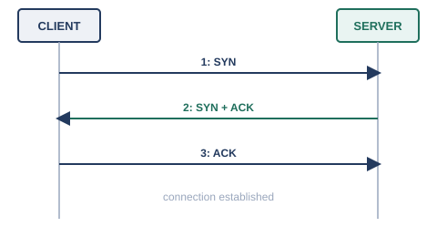
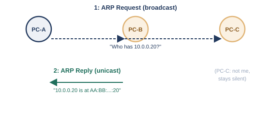

序章では、貴重なサーバーが1台に集約されていく様子と、そのサーバーがファイル保管・印刷取りまとめなど、複数のサービスを1台でまとめて提供するようになる様子を見てきました。ここで新しい問題が生まれます。1台のサーバーが、Webサービスとメールサービスを同時に提供しているとき、届いた通信をどちらのサービス向けか、どうやって区別すればよいのでしょうか。
IPアドレスだけでは、この区別はできません。IPアドレスが指し示せるのは「どの機器か」までで、「その機器の中のどのプログラム（サービス）宛てか」までは指し示せないからです。そこで生まれたのが、ポート番号という「窓口」の発想です。同じ機器の中に、サービスの数だけ窓口を用意しておき、通信の宛先としてIPアドレスとポート番号をセットで指定することで、「どの機器の、どのサービス宛てか」を一意に表せるようになります。
このポート番号を管理し、実際に窓口を開いたり閉じたりする役割を担うのが、この章のテーマであるトランスポート層（L4）です。
トランスポート層の代表的なプロトコルには、TCP（Transmission Control Protocol）とUDP（User Datagram Protocol）の2種類があります。TCPは、送ったデータが確実に届いたかを相手に確認させ、届いていなければ再送し、複数に分割されたデータも送信順に並べ直して渡す、という信頼性重視の設計になっています※1。一方のUDPは、こうした確認や並べ直しの仕組みを持たず、送りっぱなしにする代わりに、余計な手続きがない分、処理が軽くて速いという特徴があります※2。
「信頼性が高いTCPだけを使えばよいのでは」と思うかもしれませんが、確認や再送のやり取りにはそのぶん時間がかかります。リアルタイム性が求められる通話や配信では、多少データが欠けても、待たされるよりはそのまま再生を続けたほうが体験がよいことも多く、あえてUDPが選ばれます。どちらが優れているというより、通信の性質に応じた使い分けです。
ポート番号は16ビットの数値で、0番から65535番までの範囲を取ります。IANA（Internet Assigned Numbers Authority）が、この範囲を3つの区分に分けて管理しています※3。
普段、Webブラウザでサイトを閲覧するとき、サーバー側は80番や443番といった決まったポートで待ち受けていますが、クライアント側（自分のPC）は、通信のたびに動的・一時的なポートの範囲からランダムに1つを選んで使っています。この「サーバー側は決まった窓口番号で待ち、クライアント側はその都度空いている窓口を使う」という非対称な関係も、ポート番号の実際の使われ方を理解するうえで押さえておきたいポイントです。
TCPが信頼性を保証できる理由の1つが、本格的なデータのやり取りを始める前に、必ず接続を確立する手続きを踏む点にあります。この手続きは、3回のやり取りから成るため、3ウェイハンドシェイクと呼ばれています※1。

この手続きによって、お互いが「相手が確かに存在し、通信を受け付ける準備ができている」ことを確認してから、本題のデータをやり取りできます。通信が終わるときにも、今度は双方向でFIN（終了要求）とACKを交わし合い、双方が合意のうえで接続を終了させる手順が定められています。
ここまでトランスポート層の話をしてきましたが、ARPとICMPは、第1章で見たOSI参照モデルのどの層にもすっきり収まる存在ではありません。ARPはIPアドレスとMACアドレスを橋渡しする、L2とL3の間の実務的な仕組みであり、ICMPはIPそのものの一部として動くL3寄りの仕組みです。どちらも「通信そのものを届ける」役割ではなく、「通信を成立させるための下準備をする」「通信の状態を診断する」という、縁の下の役割を担っているという共通点から、本書ではこの章にまとめて置いています。
第4章では、ARPを「IPアドレスから、対応するMACアドレスを問い合わせる仕組み」として概念的に紹介しました。ここで、その具体的な手順を見ていきます。

ARPは1982年にRFC 826として標準化されています※4。ある機器が、同じネットワーク内の別の機器のMACアドレスを知りたいとき、「このIPアドレスを持っているのはどなたですか」という問い合わせ（ARP Request）を、同じネットワーク内の全機器へブロードキャストで送ります。該当するIPアドレスを持つ機器だけが、「わたしです、MACアドレスはこれです」という応答（ARP Reply）を、問い合わせ元へユニキャスト（1対1）で返します。この問い合わせと応答の結果は、ARPテーブル（ARPキャッシュ）としてしばらくの間手元に保存されるため、同じ相手に何度も問い合わせる必要はありません。
ICMPは、IPパケットが正しく届いたかどうかや、途中で何か問題が起きていないかを報告するための仕組みで、1981年にRFC 792として標準化されています※5。日常的によく使われるpingコマンドは、ICMPのエコー要求（Echo Request）を相手に送り、エコー応答（Echo Reply）が返ってくるかどうかで、相手との疎通を確認する仕組みです。また、traceroute（tracert）コマンドは、パケットの生存時間（TTL）を1ずつ増やしながら送り、途中の各ルータから返される「時間切れ」のICMPメッセージを利用して、宛先までの経路上のルータを1台ずつ明らかにする、という応用的な使い方をしています。